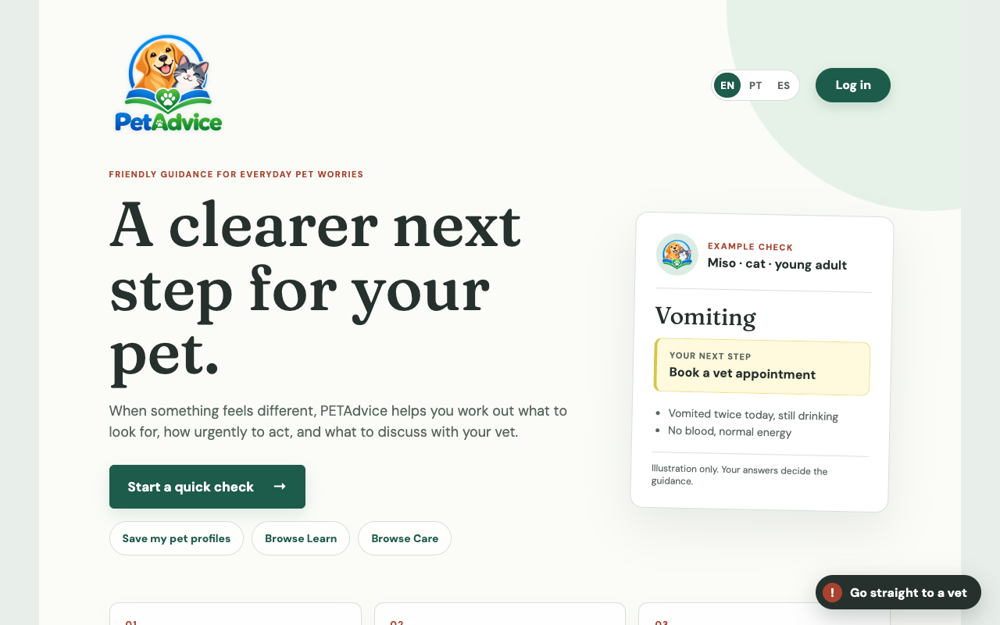

Live betaFull stack · PWA
PETAdvice
An installable app that helps dog and cat owners decide what to do next when something seems wrong. It asks branching questions and gives an urgency level in English, Portuguese or Spanish. It is educational guidance, and its clinical content is still awaiting veterinary review.
The triage engine can raise urgency but never lower it. Passwords use Argon2id, sessions are revocable, and guest checks expire and can be deleted.